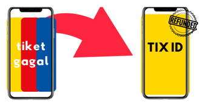

Menjawab pertanyaan seputar TIX ID!
Kami di TIX ID seringkali mendapat pertanyaan seputar penggunaan aplikasi, jadwal film, ataupun transaksi. Kami selalu berusaha memberikan pengalaman yang terbaik untuk para pengguna TIX ID, dan untuk lebih membantu dan memberikan informasi secara jelas kepada para pengguna TIX ID, kami mengumpulkan pertanyaan-pertanyaan yang sering ditanyakan dan kami berusaha menjawabnya sejelas mungkin di bawah ini:
1. Mengapa jadwal hari ini belum muncul di aplikasi TIX ID?

Jika tiket film tersebut dijual secara pre-sale, maka Anda dapat melakukan pembelian untuk beberapa hari ke depan. Namun, jika tidak dijual secara pre-sale maka hanya dapat dilakukan pembelian tiket di hari yang sama.
Sebagai informasi, seluruh penayangan jadwal film adalah kewenangan dari pihak bioskop masing-masing, kami tidak dapat mengetahui kapan dan jam berapa jadwal tersebut akan tersedia. TIX ID hanyalah berperan sebagai partner pembelian tiket secara online.
2. Bagaimana cara membatalkan atau merubah pemesanan saya yang telah selesai?
Setelah pembelian tiket Anda dinyatakan berhasil, maka Anda tidak dapat membatalkan atau merubah detail pesanan, dikarenakan semua penjualan bersifat final. Agar terhindar dari masalah ini, kami menyarankan agar Anda memastikan kembali detail pembelian sebelum melakukan pembayaran.
3. Mengapa transaksi saya tidak berhasil dan selalu refund secara otomatis?
Jika hal tersebut ter jadi maka kemungkinan besar jaringan di bioskop tersebut sedang tidak stabil yang terkadang menyebabkan terjadinya transaksi refund secara otomatis. Kami sarankan untuk mencoba melakukan pembelian kembali secara berkala di 1 jam kedepan. Mohon pastikan pula Anda memilih nomor bangku yang berbeda dengan tidak
meninggalkan 1 kursi kosong di sebelah kiri dan kanan Anda, dikarenakan hal tersebut melanggar ketentuan sistem bioskop. Karena jika tidak sesuai dengan ketentuan tersebut, maka transaksi akan refund dan dibatalkan secara otomatis oleh sistem.
4. Apa saja metode pembayaran yang dapat digunakan?

Untuk pembelian tiket XXI, Anda dapat melalukan pembayaran menggunakan Kartu Debit/Kredit berlogo Visa atau MasterCard dan Saldo DANA. Untuk dapat melakukan pembayaran, baik menggunakan saldo DANA ataupun menggunakan Kartu Debit/Kredit, Anda harus mengaktifkan akun DANA terlebih dahulu.
Sementara untuk pembelian tiket CGV dan Cinepolis, saat ini Anda dapat melakukan pembayaran menggunakan Saldo DANA. Untuk dapat melakukan pembayaran, Anda harus mengaktifkan akun DANA terlebih dahulu.
5. Berapa biaya layanan aplikasi TIX ID?
Biaya layanan pada aplikasi TIX ID adalah Rp.4000 per tiket, dimana ini adalah biaya resmi yang telah ditentukan dan sudah termasuk pajak.
6. Bagaimana proses pengembalian dana yang telah terpotong?

TIX ID tidak menyimpan saldo pada akun Anda. Setiap transaksi yang dinyatakan gagal oleh sistem, secara otomatis biaya yang telah terpotong akan dikembalikan ke akun DANA pada saat yang sama. Pada beberapa kesempatan, dibutuhkan beberapa saat untuk mengembalikan saldo tersebut ke akun DANA Anda.
Jika Anda menggunakan kartu kredit/debit untuk pembayaran, dibutuhkan waktu antara 7-14 hari kerja (tidak termasuk hari libur, sabtu dan minggu) untuk mengembalikan limit kartu kredit/saldo rekening Anda. Untuk itu kesabaran Anda sangat kami hargai.
7. Berapa jumlah maksimal tiket yang dapat saya pesan?

Maksimal pemesanan tiket adalah 10 (sepuluh) tiket per hari dengan maksimal 8 (delapan) tiket di jam tayang yang sama untuk XXI dan Cinepolis, sedangkan 6 (enam) tiket di jam tayang yang sama untuk CGV. Pemesanan melebihi jumlah maksimum akan terdeteksi otomatis oleh sistem dan Anda tidak dapat melan jutkan proses pemesanan
8. Apakah anak usia 2 tahun wajib membeli tiket?
Benar sekali, untuk penonton anak-anak berusia di atas 2 tahun wajib membeli tiket.
9. Bagaimana cara memesan tiket?
Untuk memesan tiket, silahkan ikut langkah mudah berikut :
- Masuk ke akun TIX ID Anda.
- Lihat film yang sedang tayang di bagian Sedang Tayang.
- Anda juga dapat memilih lokasi terlebih dahulu di menu Bioskop.
- Pilih jadwal tayang dan bioskop sesuai dengan keinginan Anda.
- Ketuk Beli Tiket.
- Pilih bangku yang tersedia. Bangku yang masih tersedia ditandai dengan warna gelap.
- Tap Ringkasan Order. Anda akan melihat ringkasan lengkap beserta total harga yang harus dibayarkan. Pastikan Anda memeriksanya terlebih dahulu, karena setiap pembayaran yang berhasil bersifat final dan tidak dapat ditukar atau dikembalikan.
- Ketuk Lanjutkan, lalu pilih metode pembayaran yang diinginkan. Pastikan akun DANA Anda sudah aktif jika menggunakan metode ini.
- Ketuk Bayar dan tunggu hingga pembayaran berhasil.
- Anda akan menerima notifikasi mengenai status pembelian tiket.
- Ketuk menu Tiket, dan tiket Anda dapat dilihat di bagian Tiket Mendatang.
- Perlu diperhatikan untuk pembelian tiket XXI dapat menggunakan pembayaran dengan saldo DANA dan Kartu Debit/Kredit berlogo Visa atau MasterCard yang tersimpan di akun DANA Anda. Sementara untuk pembelian tiket CGV dan Cinepolis,
saat ini hanya dapat menggunakan pembayaran dengan saldo DANA.
Untuk diketahui, penonton anak-anak berusia di atas 2 tahun wajib membeli tiket.
10. Bagaimana cara melakukan pemesanan TIX Food melalui aplikasi TIX ID?
Untuk melakukan pemesanan, langsung akses halaman utama TIX Food di aplikasi TIX ID dan pilih lokasi dimana kamu ingin melakukan pemesanan. Pilih makanan dan minuman yang ingin kamu pesan dan pastikan semuanya sudah sesuai. Setelah melakukan pembayaran, kamu akan menerima QR Code untuk mengambil makanan yang sudah kamu pesan.
11. Bagaimana cara melakukan penukaran kode pemesanan dari transaksi TIX Food yang telah berhasil saya lakukan?
Sebelum melakukan penukaran, pastikan lokasi bioskop sesuai dengan transaksi TIX Food yang sudah dibayarkan. Buka halaman TIX Food di aplikasi TIX ID dan pilih tiket pemesanan yang ingin kamu ambil. Ketuk area QR yang tertera untuk mengambil pesanan kamu.
12. Apakah saya dapat melakukan penukaran kode pesanan TIX Food di semua bioskop XXI?
Penukaran kode pesanan TIX Food hanya berlaku di bioskop XXI yang sudah kamu pilih pada halaman pemesanan, dan tidak berlaku di lokasi bioskop XXI lainnya. Untuk menghindari hal-hal yang tidak diinginkan, pastikan lokasi bioskop yang kamu tu ju sudah sesuai.